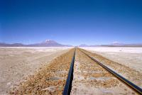
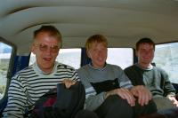
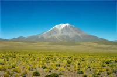
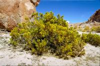

|
Lundi 1 octobre
Après une bonne nuit dans notre joli dortoir où nos 6 lits sont bien alignés
et où Joël a bien toussé, on repart. Hier nous étions dans le désert de sel,
aujourd'hui, journée volcans! On roule à travers cratères et sommets enneigés
à plus de 5400 mètres. Pas nous, les sommets... C'est superbe. Histoire de faire
un petit rappel, on traverse un autre salaar. C'est génial de rouler sur ces
lacs blancs. Mais celui-ci est peu profond donc non exploité. La route est très
variée, déserts de sel, de pierres, de sable, volcan qui fumote. De temps en
temps on retrouve une végétation faite de touffes d'herbes jaunies, hirsutes
et brûlées par le vent ou de buissonnets verts de 30 à 40 cm ou encore de mousse
rase vert pâle dure comme la pierre. Le ciel est bleu éclatant, les pierres
grises, le désert tantôt brun, tantôt crème, tantôt rouge. On voit en fait l'érosion
en cours. Des montagnes costaudes, d'autres transformées en tas de pierres,
les déserts de pierres, d'autres de gravillons, et enfin les déserts de sable
plus ou moins fin. Encore quelques millions d'années et on aura du sable partout?!
On est à 4400 mètres, en plein milieu d'un phénomène géologique dont on voit
les phases: les montagnes qui se désagrègent.
Beaucoup plus artificiel et cependant fort bien camouflée, on atteint une caserne
extra perdue dans ce désert. On se croirait dans un album de Tintin, ça vaut
le détour! Mais vivre là, ça doit être moyen rigolo. L'unique occupation de
la journée est le contrôle des passeports. Hé oui, le Chili n'est pas loin.
Etape suivante à 4200 mètres. On dirait qu'on se balade par thèmes! Les lagunas
et leurs trois espèces de flamands roses! On assiste à une succession de lagunas,
ces petits lacs étendus mais peu profonds, 30 à 40 cm, de toutes les couleurs.
On démarre par la laguna Cañapa verte et bleue, pleine de flamands. Puis on
enchaîne: la Hediona bleue pâle et blanche où on déjeune, la Chiarkoka marron,
la Honda gris crayeux aux bords verts jaunes, la Kawasaki avec des motos. Non,
celle-là n'existe pas encore. Et enfin la laguna Jamaitras blanche où s'abreuvent
oiseaux et vigognes. C'est un régal pour les yeux, même pour Geneviève dont
les lunettes ont cassé et qui sont réparées grâce à un cordon accroché sous
le menton, comme quand les héros de bandes dessinées ont mal aux dents... ou
pour oeufs de Pâques!
Thème suivant, le désert de Siloli, 80 km de désert d'un ton brun chaleureux.
Là encore, des mirages. On dirait que le ciel mange les montagnes, un lac apparaît,
grandit puis disparaît, laissant place aux montagnes bien réelles. C'est dans
ce désert qu'on voit un drôle de rocher sculpté en forme d'arbre, "el arbol
de piedra". C'est là aussi que Lionel a bien failli perdre son chapeau! Quel
vent! Il a dû courir derrière! Faire du sport! Et à 4400 mètres dàltitude en
plus! Fallait-il qu'il y tienne à son chapeau du Cambodge.
Des couches blanches, rouges, bleues, du flou dû à la chaleur, on arrive à
la laguna colorada perdue en plein désert. Dedans, des micro organismes et algues
marines dont se nourissent les flamands. Quand il y a du vent, ça colore la
lagune en rouge. Dans cette lagune, du borax, ce minerai non métallique utilisé
pour faire du verre ou de la céramique grâce à une réaction chimique avec de
l'acide sulfurique. Mais il est tard, on reviendra demain. En route pour 5020
mètres, soyons précis, où nous allons passer la nuit. Les autres jeeps restent
ici à se geler, nous on part là-haut sur le volcan qui fournit de la chaleur:
douche chaude et chauffage naturel! On dîne en T-shirt, il fait moins 10 à moins
15 degrés dehors... On est seuls avec les ouvriers de cette usine de traitement
du borax. Accueil génial. On a tout de même un peu peur de se perdre car le
lieu est prévu pour 150 personnes, il y a des chambres partout, les couloirs
sont immenses, la salle à manger aussi. Il n'y a que 14 ouvriers qui préparent
l'ouverture de l'usine, leur cuisinière et nous, dans notre chambre à lits superposés.
Suite du voyage : Sud Lipez
|

Bolivie
Salaar Uyuni
Salaar
|

Bolivie
Salaar Uyuni
Salaar
|

Bolivie
Salaar Uyuni
Volcan Ollague
|

Bolivie
Salaar Uyuni
Vallee volcanique
|
|
|